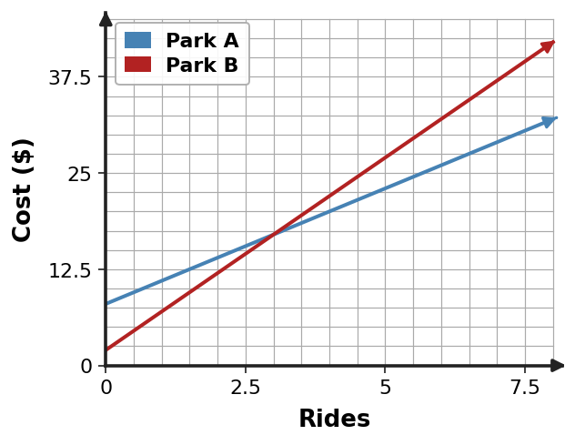

Algebra 1 · Unit 1 · Section 1.5 · Investigation
Model Toolbox: Which Form Answers the Question?
Equations as Models
Learning Target: Students will write, solve, and interpret equations that model situations.
Directions
- Work with a partner or group of 3.
- Choose a representation for a reason.
- Define the variable before solving.
- Keep units attached to conclusions. A number is not finished until it answers the original question.
Launch · Same Situation, Different Questions
The Park Decision
Park A
\$8 admission plus \$3 per ride.
Park B
\$2 admission plus \$5 per ride.
| Question | Prediction / Reasoning |
|---|---|
| Which park is cheaper for 1 ride? | |
| Which park is cheaper for 5 rides? | |
| Which park gets expensive faster? | |
| Is there a number of rides where the costs are the same? |
Part 1 · Choose Your Tool
| Question | Best tool | Why it helps |
|---|---|---|
| Cheaper for 1 ride? | ||
| Cheaper for 5 rides? | ||
| Which cost grows faster? | ||
| When are the costs equal? | ||
| What does the answer mean? |
Part 2 · Table Model
| Rides ($r$) | Park A | Park B | Cheaper? |
|---|---|---|---|
| 0 | |||
| 1 | |||
| 2 | |||
| 3 | |||
| 4 | |||
| 5 | |||
| 6 |
What does the table show well? What question would become inefficient to answer by extending the table?
Part 3 · Graph Model

Estimate the intersection: __________________________
What does each coordinate of that point mean in the situation?
Part 4 · Equation Model
Let $r$ represent the number of rides.
Park A: $8+3r$ Park B: $2+5r$
Write one equation that answers: When do the parks cost the same?
Solve the equation. Show balanced steps.
Check the solution in both cost expressions.
Part 5 · Interpret and Test Reasonableness
| Question | Your response |
|---|---|
| What does your value of $r$ mean? | |
| What is the common cost? | |
| Which park is cheaper before that ride count? | |
| Which park is cheaper after that ride count? | |
| Why did the equation give an exact answer? |
Synthesis
Choose the model for the question
Complete the statement in your own words:
Tables are useful when...
Graphs are useful when...
Equations are useful when...
Context is still necessary because...